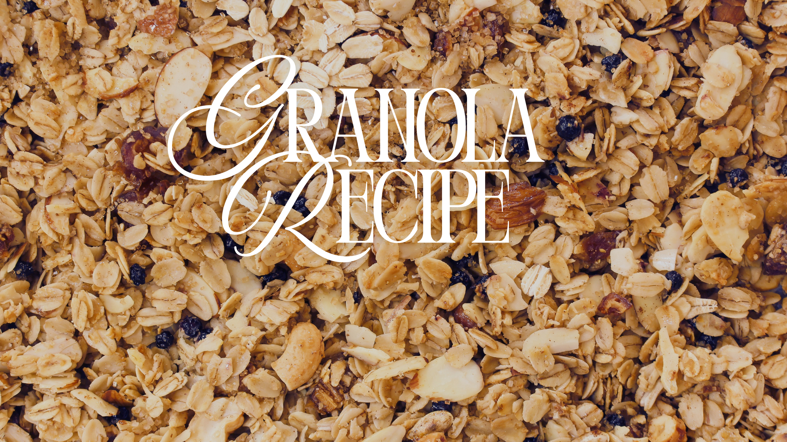

Simple Granola Recipe
This is an amazing granola recipe that you can make at home. It will take about 15-30 minutes to make and is perfect for a quick breakfast. I love it because it is super easy to make and has become one of my favorite foods for a quick breakfast.